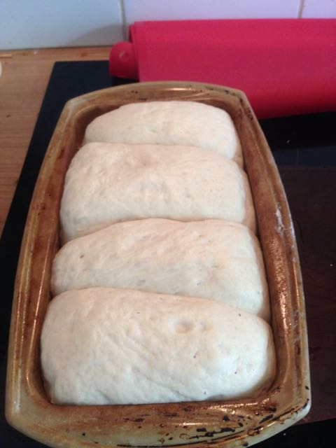

Recipies
Table of Contents
1 Our Famous Brown Bread
1.1 Recipe
- 150 gr Roggen
- 250 gr de pain au graines
- 100 gr 65 blée
- 50 gr de flocons d'avoine
- 2 cc de levure sec / 21 gr levure frais
- 1 cc sel
- 400 ml de l'eau
- 0.5 cc sucre
- 1 cs l'huile
- 1 cs de miel
- 1 cs molasse
- 45 – 60 minutes gehen lassesn, Volumen verdoppelt
- 180˚C ca. 1h, davon 10 Minuten ohne Form
1.2 Verdict
2 Toastbrot nach "Das Brot Backbuch"
This recipe is from "Das Brot Back Buch" (Geisler 2013) Es ist angepasst für zwei Brote und Küchenmaschine Bosch Universal 400W (Sehr altes Model!).

2.1 Recipe
- 20 gr Frischhefe
- 140 gr Salz
- 140 gr Wasser
Mischen und 4 – 12 Stunden im Kühlschrank lagern
- 430 gr 65 blée (U-Bio)
- 300 gr blée semi complet (Intermarché)
- 260 gr Wasser
- 40 gr Süße Sahne
- 20 gr Zucker
Mischen mit dem Hefeansatz 2+5 Minuten Stufe I Kneten
- 40 gr Butter
in kleinen Stücken dazugeben, 3 Minuten Stufe I, 2 Minuten Stufe II, nicht kleben und seidenmatt.
2 Stunden gehen lassen (24˚C), nach 1h falten
rundwirken
15 Minuten entspannen
Kastenformen mit etwas Öl und Mehl bestäuben
40cm langen Strang rollen, in 4 Teile schneiden und quer in Kastenform hintereinender legen
1.5 h bei 24˚C gehen lassen
210˚C (Stellung Temperstur Regler!) vorgeheizten Ofen mit Schwaden 20-30 Minuten, nach 10 Minuten Schwaden ablassen.
danach Brot aus Form nehmen und weiter 5-10 Minuten ohne Form backen.
Während des backens immer wieded kontrollieren da es leicht zu dunkel wird!
In heißem zustand mit Wasser bestreichen
Auf Gitterrost komplett unbedeckt komplett abkühlen lassen
2.2 Verdict
Sehr Gut so wie es ist.
2.3 Tweaking
3 Käsefondue Savoyarde
This is for two and a half persons and the combination of cheeses is suggested by our local Cheese Shop, Le Cellier A Fromages, by Marie Montini.
To work best, you need a cast iron or ceramic pot as otherwise the heat is to much concentrated in the center where the burner is.

3.1 Recipe
- 500 gr cheese (200 per person) (e.g. 1 part Comté, 2 parts Vacherain, two parts third forgotten)
cut in small pieces or grate
- 250 ml dry white wine (e.g. Riesling)
- 1 clove garlic (squashed or cut or …)
heat up and add cheese slowly - stirring continuously!
- 1 tbsp Speisestärke
- 2 tbsp wine
mix together and add to the wine / cheese mix.
The temperature should not be cold (no bubbling) or to hot (lot's of bubbling). Just about bubbling a bit.
Again: when eating, stir with the forks!
Enjoy.
4 Waffeln einfach und schnell
Das Rezept ist von Chefkoch.de
4.1 Recipe
- 500 g Mehl
- 300 g Butter
- 250 g Zucker
- 2 Pck. Vanillezucker
- 1 Prise(n) Salz
- 3 Eier
- 400 ml Milch
- Alle Zutaten zu einem Rührteig verarbeiten und portionsweise daraus Waffeln backen.
4.2 Verdict
Sehr gut und einfach und schnell zu machen.
5 Lapin sauté chasseur
6 Joues de porc au cidre et miel
See marmiton.com
7 Books
Lutz Geisler (2013), Das Brot Back Buch - Grundlagen & Rezepte für ursprüngliches Brot (2013). ISBN 978-3-8001-8277-0 bei Ulmer Verlag, bei Amazon.de